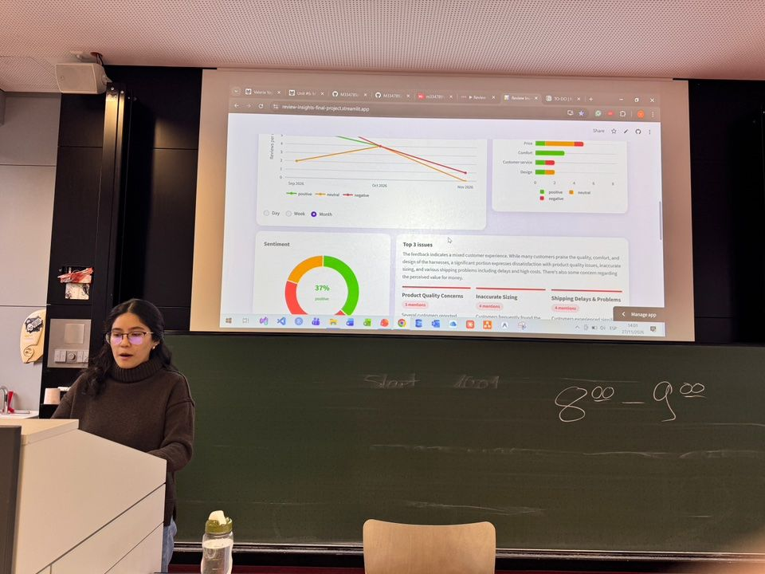
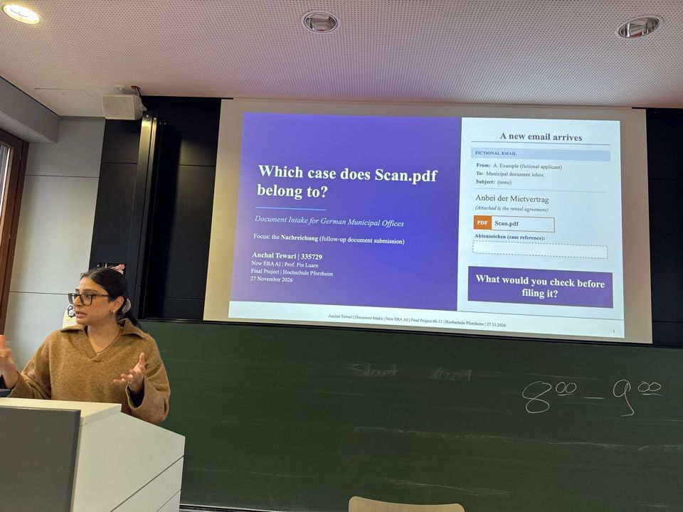
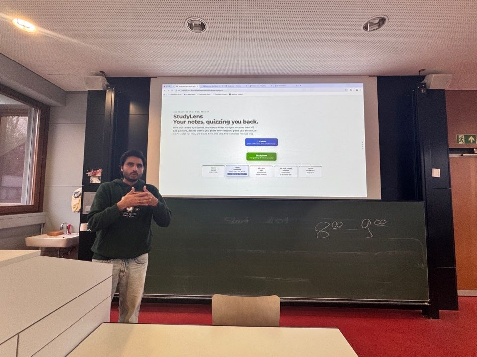
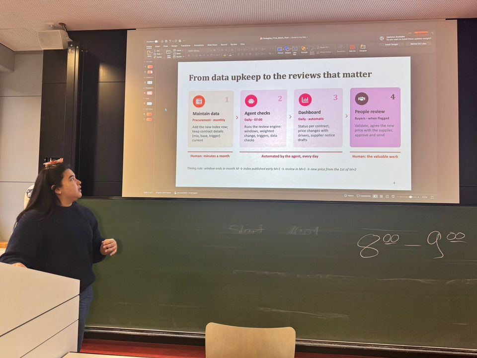
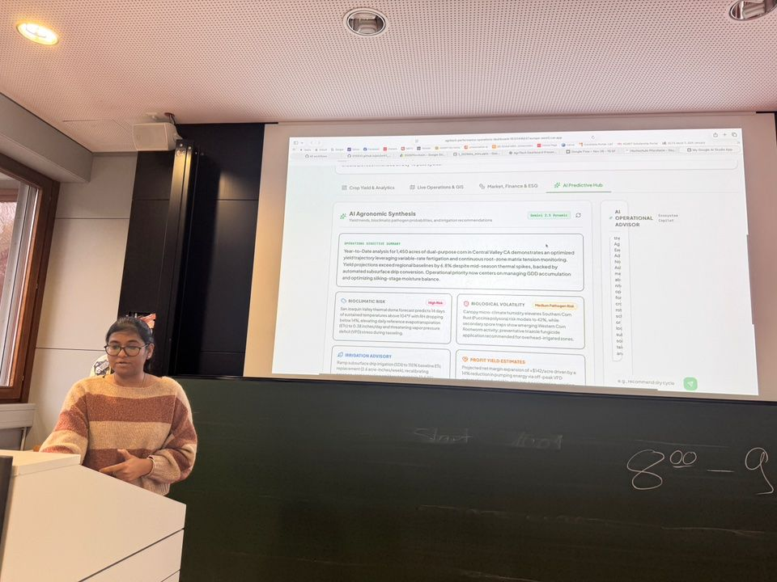
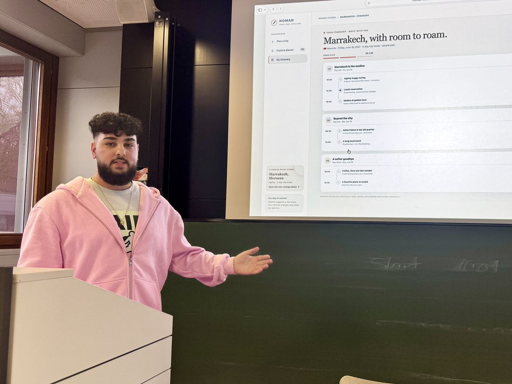
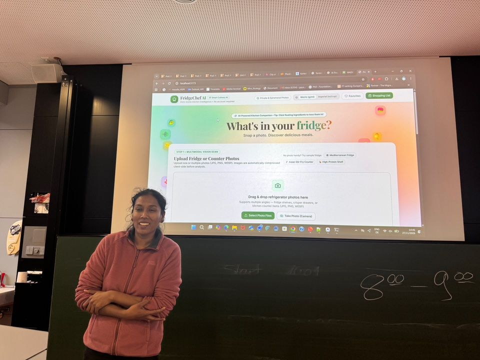
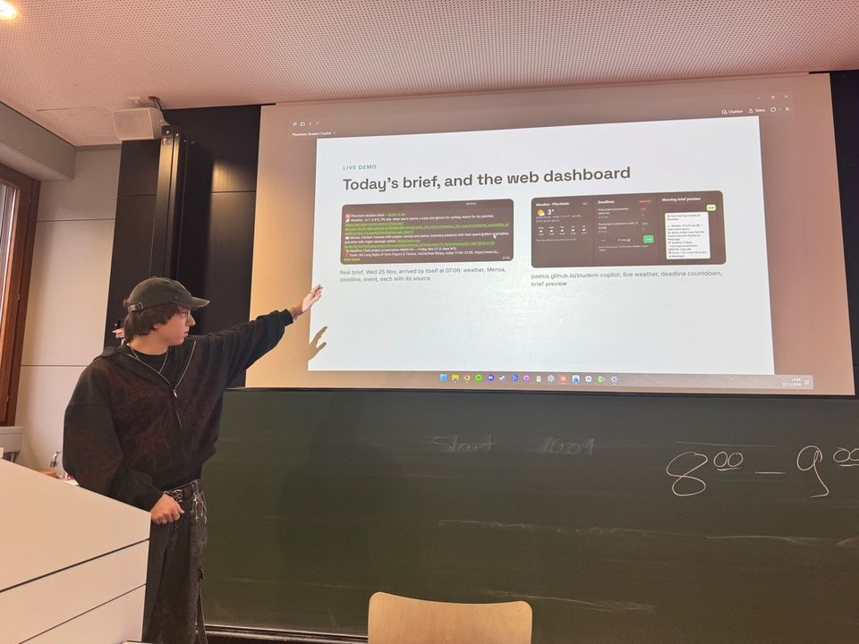
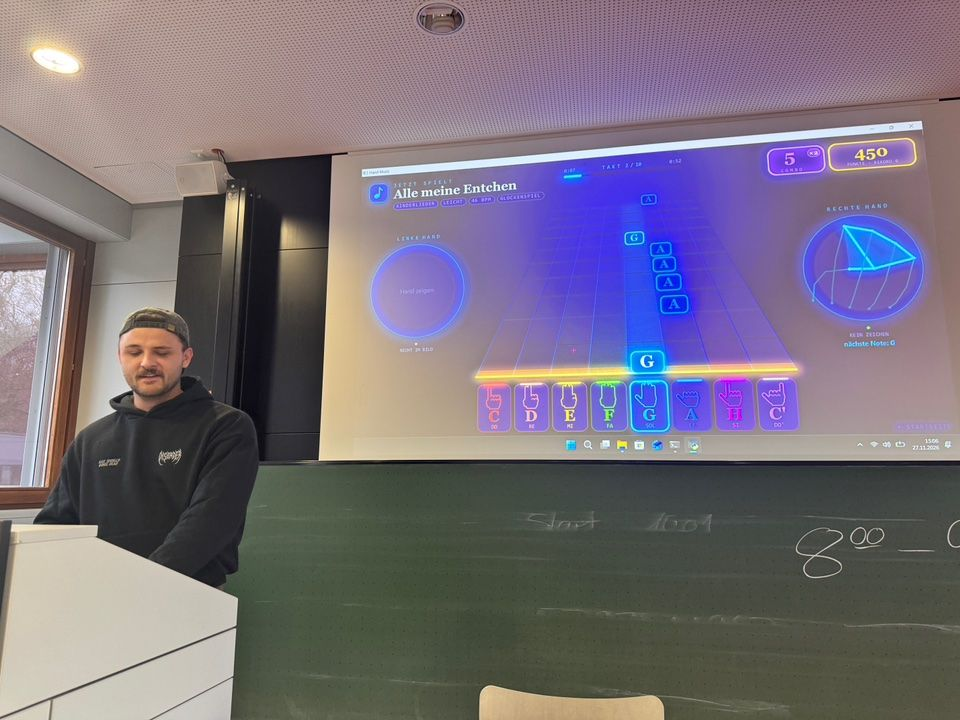

Hochschule Pforzheim · 2026/27 冬季學期
AI 的新邊界：從感知到代理智慧
期末專案報告與不記名課程回饋 — 課程報告（MMI5194）
授課教師：欒帥 教授 Prof. Dr. Pin Luarn（國立台灣科技大學）
課程日期：2026 年 11 月 16 日至 27 日 · 期末報告場次：2026 年 11 月 27 日（星期五）
班級人數：47 位學生（MBA、MDBM、MMI、MCCM 與 MLiCS 學程）
關於本報告。《AI 的新邊界》這門課以四個階段為主軸——感知 AI（Perception AI）、生成式 AI（Generative AI）、代理式 AI（Agentic AI）與個人 AI 代理（Personal AI Agents），並強調「做中學」。在 2026 年 11 月 27 日的最後一堂課，學生發表了他們親手打造的個人 AI 應用期末專案。本報告第一部分依發表順序記錄當天十四位學生的報告內容，並搭配課堂照片；第二部分分析學生在報告後填寫的不記名期末回饋問卷（兩題開放式問題，共 20 則回覆）。
第一部分 — 期末專案報告
十四個專案橫跨消費應用、工作場域自動化、公共部門工具與感知 AI 的創意應用。貫穿其中的共同主線是：幾乎每位學生都超越了「使用聊天機器人」的層次，而是為自己工作或生活中的具體問題，真正打造出一套能運作的系統——一個 agent、一條自動化管線，或一個 AI 驅動的應用程式。
| # | 學生 | 專案 | 核心技術 |
|---|
| 1 | Valeria Yagui Nishii | Review Insights 顧客評論洞察儀表板 | n8n、Gemini API、Streamlit |
| 2 | Anchal Tewari | 德國市政機關文件收件系統 | 文件 AI、網頁應用（Civic Desk） |
| 3 | Amit Sharma | StudyLens | 多代理人迴圈、Telegram |
| 4 | Chirag Milan Gupte | AI 熱量追蹤器 | Gemini 視覺 |
| 5 | Alejandra González Ibarra | SAM OneAI Skill | 知識技能、SAP Joule Work |
| 6 | Nur Hidayah Binti Ahmad | Packaging Price Watch 包裝價格監測 | Python 引擎、排程 Claude agent |
| 7 | Mitthu Ghosh | AgriTech 農業績效與營運儀表板 | Gemini 2.5、儀表板分析 |
| 8 | Bashar Alkassis | NOMAD 旅遊行程夥伴 | 代理式重排行程原型 |
| 9 | Gayathri Sekar | FridgeChef AI | 多模態視覺、食譜生成 |
| 10 | Alesia Musabelliu | MIRRA AI 美妝夥伴 | 五代理人概念設計 |
| 11 | Pascal Müller | Pforzheim Student Copilot | Cue agent、技能、WhatsApp |
| 12 | Claribel Crystal Lupi | Job Application Autopilot | 瀏覽器擴充、Claude、Sheets |
| 13 | Manuel Lowien | Hand Music | MediaPipe 手部追蹤 |
| 14 | Aaron Ipser | DB Navigator Next Gen | HAFAS 路由資料、AI 新聞推播 |
1. Valeria Yagui Nishii — Review Insights 顧客評論洞察儀表板
學號 334789 · MDBM · 個人網頁：m334789.github.io · 應用：review-insights-final-project.streamlit.app


專案內容。企業收到的顧客評論數量，早就超過任何人能逐則閱讀的程度。Valeria 打造了一條管線，把原始評論檔轉成管理層可以直接使用的洞察儀表板：在她的 Streamlit 應用裡，使用者上傳評論 CSV（欄位：Date、Rating、Review）或直接貼上評論文字，按下「Analyze reviews」，應用程式就透過 Webhook 把評論送進她的 n8n 工作流，組裝提示詞後呼叫 Gemini API 做情緒分析與議題擷取，解析後的結果再回流到儀表板。
產出成果。儀表板包含情緒趨勢圖（可切換日／週／月）、情緒占比圓環圖，以及附提及次數與文字綜整的「Top 3 issues」面板。她的 demo 資料是寵物胸背帶的網路評論：正面評論占 37%，前三大問題是產品品質疑慮（5 次提及）、尺寸不準（4 次）與物流延誤問題（4 次）；顧客喜歡胸背帶的設計，但對尺寸、配送與性價比有疑慮。分析結果可下載。應用部署在 Streamlit Cloud，程式碼放在她的 GitHub repo。
應用到的課程概念：生成式 AI 文字分析 · n8n 工作流自動化 · API 串接 · 部署可運作的網頁應用（GitHub + Streamlit）。
2. Anchal Tewari — 德國市政機關文件收件系統
學號 335729 · MBA · 應用：「Civic Desk」Document Intake Desk（部署於 chatgpt.site）


專案內容。Anchal 的報告用一個看似簡單的問題開場：「Which case does Scan.pdf belong to?（Scan.pdf 到底屬於哪個案件？）」德國市政機關每天收到大量補件文件（Nachreichung）——往往只是一封沒有主旨的電郵夾著掃描附件，案件編號（Aktenzeichen）欄位還留空。文件要歸檔之前，承辦人員得先弄清楚它屬於哪個案件、又需要查核什麼。
她打造的系統。一個可運作的「Document Intake Desk」，有三個面板：收件匣、文件檢視、案件查核清單。她的 demo 收件匣裡有三份租賃合約 PDF 已帶案件編號 DEMO-241，第四份正是沒有編號的 Scan.pdf。檢視面板會從文件擷取結構化欄位（案件編號 DEMO-241、合約編號 MIET-017、文件 ID MV-041、合約到期日 2027 年 3 月 31 日），按下「Check document」即可對照案件查核清單驗證後再歸檔。
應用到的課程概念：感知／文件 AI（讀取掃描文件）· 結構化資訊擷取 · 為公共行政設計的代理式工作流。
3. Amit Sharma — StudyLens
學號 335692 · MBA · 個人網頁：amitvedvyas-bit.github.io


專案內容。StudyLens 是一個個人複習代理，核心承諾很簡單：「Your notes, quizzing you back.（你的筆記，反過來考你。）」學生拍下或上傳上課筆記、投影片後，agent 迴圈就接手：系統讀取教材、撰寫測驗題——而且會先拿筆記自我檢查題目與答案是否正確（他的範例：「Which dataset verifies a model before deployment? — the validation set」）——再透過 Telegram 把測驗送到學生手機。學生在聊天裡作答後，系統批改，家教 agent 講解答錯的地方，規劃 agent 則更新學習進度。
系統架構。Amit 特別強調：拍照與讀取是任何工具都能做的事，真正的功夫在於能對學生答案做出反應的迴圈。他的設計用了四個分工的 agent 互相傳遞工作——讀取、出題與檢查、家教講解、規劃與追蹤——是一套明確的多代理人系統，而不是單一聊天機器人。
應用到的課程概念：多代理人系統 · 個人 AI 代理 · 通訊軟體整合（Telegram）· 生成內容的自我檢查。
4. Chirag Milan Gupte — AI 熱量追蹤器
學號 336215 · MBA · 個人網頁：336215.github.io
專案內容。把感知 AI 直接用在日常生活中：拍下或上傳食物照片，Gemini 視覺模型就能辨識餐點並估算熱量。應用程式有每日紀錄（Today’s log）與即時累計的每日大卡計數，並提供 Camera、Upload、Identify 三個操作。Chirag 在課堂上拿著一顆柳橙對著鏡頭實機示範，讓全班親眼看到感知 AI 單元如何落地——是當天很有感染力的一個小時刻。
應用到的課程概念：感知 AI · 多模態視覺模型 · 個人健康工具。
5. Alejandra González Ibarra — SAM OneAI Skill
學號 335169 · MDBM · 個人網頁：m335169.github.io
專案內容。Alejandra 瞄準一個經典的企業痛點：員工為了找一份權威答案，要在 SharePoint 裡翻找好幾個小時。她把 SAM OneAI 做成一個可重複使用的 skill，安裝在 Joule Work Desktop 上——安裝方式簡單到只要上傳 SKILL.md 檔案。這個 skill 會理解問題、把問題路由到正確的 SAM 知識空間（SPM 投資組合管理、SCM 合規、SFM 財務、TDM 工具與數據、TMO 轉型辦公室或 SAM General）、讀取可信內容，幾秒內就回傳附出處的答案，而不是丟回一堆搜尋結果。
為什麼重要。在所有專案中，這個專案最直接地展現了課程「skills」的概念如何進入真實企業技術棧：把知識工作包裝成一個可安裝、受治理的能力，而不是跟模型隨意聊聊。
應用到的課程概念：Agent 技能（SKILL.md）· 在可信知識庫上檢索 · 企業 AI 助理（SAP Joule）。
6. Nur Hidayah Binti Ahmad — Packaging Price Watch 包裝價格監測
學號 335033 · MDBM · 個人網頁：m335033.github.io


問題。包裝合約通常是連動指數的：原物料指數漲跌超過約定區間，合約價就必須調整。實務上，採購人員每月人工蒐集指數、逐份人工檢查合約——緩慢又容易出錯，漏掉降價週期就是默默多付錢，案件量大還會造成決策疲勞。
她打造的系統。一套四步驟、讓人只碰決策的系統。（1）採購人員維護原始資料——Excel 指數追蹤表與合約清單——每月只需幾分鐘人力。（2）用 Python 寫的審查引擎負責所有計算（程式碼內含 20 個測試），套用時間窗、加權變化、觸發條件與資料檢查，由排程 Claude agent 每天 07:00 驅動。（3）共用儀表板自動更新：每份合約的狀態、被標記的價格變動與其驅動因素、給供應商的通知草稿。（4）採購人員只審查被標記的案件，與供應商議定新價格、核准後才寄出。她的時間規則是：區間在 M 月結束 → 指數在 M+1 月公布時審查 → 新價格自 M+2 月 1 日起適用。在 12 份合約的 demo 重播中，引擎標記了 3 筆將於 2026 年 12 月 1 日生效的價格變動（+7.89%、−6.00%、+5.12%）。
應用到的課程概念：排程代理 · 人在迴路中的自動化 · 以程式計算並附測試 · 儀表板作為 agent 的產出。
7. Mitthu Ghosh — AgriTech 農業績效與營運儀表板
學號 335632 · MBA · 個人網頁：335632.github.io


專案內容。Mitthu 打造了一個智慧農業「控制室」，情境是加州中央谷地的玉米生產（2026 年秋季）。互動篩選器——地區、品種、生長週期、從微型到超大型的農場規模、日期區間——會驅動頁面上每一個 KPI：監控 14 座農場、6,664 英畝，產量預測 36,385 噸，用水效率 94.2%，減碳 2,999 公噸，168 個運作中的 IoT 感測器（土壤濕度與氣象站），農民滿意度 4.7/5。「Farm Care Alerts」為每個問題配上對策：AquaFlow 取水限制 −5%，以精準滴灌排程補償；預報高溫，則把自動噴灑改到夜間。
AI 層。由 Gemini 2.5 驅動的「AI Predictive Hub」會產出「AI Agronomic Synthesis」：執行摘要（1,450 英畝雙用作物玉米，產量較區域基準 +4.8%）、評為 HIGH 的生物氣候風險（San Joaquin Valley 熱穹——14 天高於 104 °F、相對濕度低於 18%）、評為 MEDIUM 的病原風險（南方玉米銹病模型 42%，建議對高架灌溉區預防性施用三唑類殺菌劑）、灌溉建議（地下滴灌達基準 ETo 的 115%），以及利潤估計（每英畝淨利 +$140、抽水能耗 −14%）。另有對話式的 AI Operational Advisor 回答後續問題。頁籤涵蓋 Crop Yield & Analytics、Live Operations & GIS、Market 與 Finance & ESG。
應用到的課程概念：生成式 AI 的綜整與建議 · 資料儀表板 · IoT／感知資料作為 agent 輸入 · 決策支援。
8. Bashar Alkassis — NOMAD
學號 335061 · MDBM · 個人網頁：335061.github.io


專案內容。NOMAD——標語是 “Your trip. Still on.（你的旅程，照走不誤。）”——是一個城市短旅的 AI 行程夥伴，建立在一個原則上：它會因應突發狀況重新規劃，但絕不動你的固定訂位，而且任何變更都要經你批准才生效。使用者告訴它目的地、日期與喜歡的步調（文化、在地美食、戶外、悠閒的早晨），NOMAD 排出行為，並把固定訂位——demo 裡是 Marrakech 13:00 的午餐訂位——標記為受保護。
突發狀況處理。Demo 用兩個情境貫穿。天氣轉壞時，10:00 的 Agafay 沙漠越野車行程移到隔天，今天改排 Hammam 與 spa 的悠閒下午——「Your day, reimagined」：冒險保留了，這一天也保持放鬆。到了博物館才發現沒開時，NOMAD 提議換到步行 12 分鐘的 Courtyard Gallery 作為替代站點，13:00 的午餐訂位則原封不動。Bashar 還設計了正規的評估方法：12 位參與者、兩個配對的「景點關閉」情境，對照組用傳統方式（地圖、搜尋與記憶）自己重排，實驗組用 NOMAD，量測速度、正確性、信心與認知負荷，並交換順序以消除學習效應。原型內建 20 個精選 city-break 目的地，而且誠實註明這是 prototype、demo 中的場地供應狀況是模擬的。
應用到的課程概念：代理式規劃與重新規劃 · 人在迴路中的批准機制 · 產品與評估設計。
9. Gayathri Sekar — FridgeChef AI
學號 333080 · MBA · 個人網頁：333080.github.io


專案內容。FridgeChef AI 從一個人人都有的問題出發：「What’s in your fridge? Snap a photo. Discover delicious meals.（你冰箱裡有什麼？拍張照，發現美味料理。）」第一步是多模態視覺掃描：使用者從多個角度上傳冰箱與流理台的照片——層架、蔬果抽屜、台面——圖片在傳送分析前先在用戶端壓縮。系統辨識出看得見的食材，使用者調整偏好（飲食需求、公制或英制單位），應用程式就生成食譜卡。
產出成果。每張卡顯示與手邊食材的吻合分數（demo 的三道菜——地中海 Shakshuka、香草煎雞胸佐櫻桃番茄、10 分鐘墨西哥風「冰箱大雜燴」——全部 100%）、烹飪時間、難度、熱量與蛋白質／碳水／脂肪，並逐項列出「In Your Fridge」清單與份量（雞蛋 6 顆、櫻桃番茄 250 g、嫩菠菜 150 g、Feta 起司 200 g），還有一句保證：「You have 100% of the ingredients to cook right now!（食材 100% 齊全，現在就能煮！）」功能包括我的最愛、購物清單，以及一鍵「View Full Recipe」與「Cook Mode」。隱私被當成功能而不是附註：設計上強調「Private & Ephemeral Photos」，並內建範例冰箱（地中海冰箱、亞洲熱炒台面、高蛋白層架），讓任何人不用上傳真實照片就能試用整個流程。
應用到的課程概念：感知 AI（多模態影像理解）· 生成式 AI 食譜創作 · 消費應用與隱私設計。
10. Alesia Musabelliu — MIRRA
學號 335076 · MDBM · 個人網頁：335076.github.io
專案內容。MIRRA 是一個代理式 AI 個人美妝夥伴，以五頁的概念介紹呈現，建立在三個動詞上：Recognize（辨識）、Personalize（個人化）、Adapt（適應）。她指出的問題，是任何人站在美妝貨架前都熟悉的：產品多到不知如何選、成分組合讓人困惑、保養流程在膚況或需求改變時從不調整。
系統設計。MIRRA 不是單一助理，而是一支由 Orchestrator 協調的五人 agent 團隊：理解使用者膚質的 Skin Intelligence、檢查產品與成分衝突的 Ingredient Guardian、組建早晚保養流程的 Routine Architect，以及回顧成效並調整流程的 Reflection Agent。她闡述的願景是：幫使用者理解自己擁有的產品、用相機辨識產品、依個人需求建立流程、在需求改變時調整建議，並讓使用者始終掌握保養決定的主導權。用她的話說，目標是把感知、推理與適應結合成一個夥伴——恰好也是這門課主軸的精煉總結。
應用到的課程概念：多代理人架構 · 感知（產品辨識）· 會隨時間適應的個人代理。
11. Pascal Müller — Pforzheim Student Copilot
學號 325712 · MMI（Master Marketing Intelligence）· 個人網頁：paelus.github.io · 儀表板：paelus.github.io/student-copilot


問題。一個學生的早晨散落在五個 app 和三個網站裡——天氣、Mensa 菜單頁、Moodle 與電郵裡的截止日、市區活動、新聞——沒有單一總覽，於是存在腦袋、筆記和收件匣裡的截止日就這樣漏掉了。而他每天早上反正一定會開的 app，是 WhatsApp。
他打造的系統。一個住在 WhatsApp 裡的個人學業助理，以名為「Cosmo」的 Cue agent 為核心，配上兩個自訂技能（pforzheim-student-copilot 與 daily-news-briefing）與持久記憶。平日 07:00 它送出晨間簡報：Pforzheim 天氣與騎車穿著建議、今日 Mensa 菜單（附來源）、未來七天的截止日、Pforzheim 與學校的活動、他自選主題的兩則新聞。整天都可以用 WhatsApp 指令管理系統——brief、mensa、weather、topics、deadline <事項> <日期>、deadlines、done、remind <文字> <時間>——截止日與新聞主題則保存在 agent 的記憶裡、跨對話延續。網頁儀表板同步呈現相同資料，含即時天氣、截止日倒數與簡報預覽。實機示範用的是 11 月 26 日星期三的真實簡報，它在 07:06 自己送達。他最後把自己的作品對應到課程的六大 building blocks：agent、技能、排程任務、通訊管道、記憶、網路＋聊天機器人——是全場最直接體現課程「個人代理」單元的作品。
應用到的課程概念：個人 AI 代理 · Agent 技能 · 排程任務 · 通訊管道（WhatsApp）· 長期記憶 · 附來源的網路搜尋。
12. Claribel Crystal Lupi — Job Application Autopilot
學號 335034 · MDBM · 個人網頁：335034.github.io
專案內容。求職就是大量投遞——然後失去追蹤。Claribel 的標語是：「Mass job application. One click logs a job; an interview invite brings a ready pack.（大量投遞求職：一鍵記錄職缺；面試邀請一來，準備包就備好。）」瀏覽器擴充功能會讀取職缺頁面的職稱、公司、地點與日期，並保存完整的職缺說明；點一下「Save to sheet」就把職缺記進 Google Sheets 追蹤表，含投遞日期、職位、公司、狀態與備註。「距投遞天數」超過 14 天會變成琥珀色——該追蹤了。
面試準備包。當某一列的狀態改成「Interview」，求職者在 Claude 裡輸入 /job-refresh（筆電或手機皆可）；Claude 研究公司、職位與領域，讀取履歷，然後把一份準備包連結回該列：公司速覽、職位解讀、「職能知識」階梯（描述性 → 診斷性 → 預測性 → 規範性分析）、CV 差距清單（她的範例：SQL 與儀表板是強項；A/B 測試需要複習；Python pandas 需要加強）、可能面試題、術語表、以及可以反問對方的問題。她甚至比較了三種運行方式的成本：Claude 訂閱（額外費用 €0）、Claude API（總計約 $10–20——她的選擇；她的估算可涵蓋 500 筆職缺與 30 份準備包）、Gemini 免費層（$0，但有每日上限）。
應用到的課程概念：工作流自動化 · LLM 研究與文件生成 · 用試算表當輕量應用後端 · 有成本意識的工具選擇。
13. Manuel Lowien — Hand Music
學號 324033 · MMI · 個人網頁：324033.github.io


專案內容。「Spiele Musik mit deinen Händen」——用你的雙手彈音樂。Hand Music 是一款由 MediaPipe 手部追蹤驅動的節奏遊戲：網路攝影機看著玩家的手，每個手指手勢對應一個音符（畫面下方的音符磚是 C、D、E、F、G、A、H、C′）。音符像 Guitar Hero 那樣沿軌道落下，在正確時機比出正確手勢就得分並累積 combo，還有即時回饋（「Perfekt!」、「Gut」）。兩側面板即時顯示左右手的手部骨架追蹤與下一個要彈的音符，遊戲甚至會辨識舉起的手指來倒數開場（4-3-2-1）。
模式與內容。德文介面提供自由演奏（Freies Spiel）、練習模式（Übungsmodus）、說明與設定。曲庫是兒歌——現場示範用的是 Alle meine Entchen（簡單難度、40 BPM、鐘琴音色），曲庫裡還有 Mary Had a Little Lamb、Twinkle Twinkle Little Star、Old MacDonald Had a Farm、Hänschen klein 與 Bruder Jakob。Manuel 在課堂上親自實機示範，邊彈分數邊往上跳。
應用到的課程概念：感知 AI（即時手部關鍵點追蹤）· 人機互動 · AI 在音樂與遊戲上的應用。
14. Aaron Ipser — DB Navigator Next Gen
學號 336209 · MBA · 個人網頁：336209.github.io
專案內容。Aaron 把德國鐵路的旅程規劃器重新想像成 Baden-Württemberg 州版的「Next Gen」概念。他的原型結合了 DB HAFAS 即時路由與全州資料——頁首標示 64 個站點、8 個公車網絡，涵蓋範圍橫跨全州 23 個運輸聯盟（Verkehrsverbünde：VVS、VRN、KVV、RVF、bodo 等）——還有一個看得見的「資料管線狀態」面板與一鍵載入的 BW 情景路線（例如 Schwäbisch Hall 到商業樞紐、Karlsruhe 到大學城、Mannheim Hbf 到 Freiburg 的 ICE，或全州城市中心公車探索）。
使用體驗。模組化路線組合器讓旅客逐段拼出旅程（Stuttgart Hbf → Ludwigsburg 搭 S-Bahn → Mannheim Hbf），並納入 Deutschlandticket 的邏輯；地圖畫面同時顯示最佳路線（2 小時 22 分）與替代路線（2 小時 56 分），可依區域鐵路、S-Bahn／U-Bahn 與偏好篩選交通工具。「BW Rail & Bus News」頁籤自述由 AI 新聞推播驅動，把原始的營運異常資訊轉成建議——例如 Stuttgart Hbf 月台動線提醒，建議旅客為跨城轉乘多留 15–25 分鐘；以及一則說明：Deutschlandticket 與 JugendBW 在全州的區域鐵路與地方公車都有效。
應用到的課程概念：處理即時資料與 API · AI 生成的資訊與建議內容 · 產品原型設計。
第二部分 — 不記名課程回饋
方法。期末報告結束後，學生受邀填寫一份不記名的 Google 表單，共有兩題開放式問題。表單不蒐集姓名與電郵地址，也不需要登入。每題各收到 20 則回覆——約占名單 47 位學生的 43%。兩題各有一則答案文字出現兩次（Q1 是 “I loved every part of this course! I really like the transition from manually using agentic ai to having the system being created automatically through advanced apps.”；Q2 是 “I would not change a single thing about this course. The professor is an absolute genius…”）。這些都照提交內容計入；最可能是同一位學生重複送出，因此實際填答人數應為 19–20 人。Q2 有一則回覆在不記名表單上自願署名（“Sincerely, Alesia Musabelliu”）。
20每題回覆數
≈43%占 47 人班級的比例
11 / 20Q1 指名 agents 最有用
9 / 20Q2 表示完全不用改
第一題 —「Which topic in this course did you find most useful? Why?（這門課哪個主題對你最有用？為什麼？）」
Agents 壓倒性居首。二十則回覆中有十一則以某種形式指名 agents 是這門課最有用的部分：泛指的 agentic AI（2 則）、個人 agents（2 則）、多代理人技能、Hermes agent、以 Cue 打造的個人 WhatsApp agent，以及「Agents, n8n, Hermes」這類組合。反覆出現的理由是「主導權」勝過「資訊量」：學生看重的是學會打造一個能替自己做事的系統，而不只是對模型下提示詞。一則回覆用一句話說完整門課的軌跡——從「manually using agentic ai」到「having the system being created automatically through advanced apps」（從手動使用代理式 AI，到讓系統透過進階應用自動生成）。
第二名是「全部」。五則回覆的答案等於「全部」——「All of the topics were so useful」、「All」、「EVERYTHING in this class was more than useful!」——而這五則裡有三則在「全部」之外還特別點名 agents。與此相近的，有三則回覆讚賞工具版圖的廣度：「We were introduced to so many tools which most of us had never heard of, this was the best part of the course!（我們認識了好多從沒聽過的工具，這是這門課最棒的部分！）」
被點名的具體工具。n8n（2 則）、Hermes（2）、Cue（2）、GitHub 與自建網站（1）、Teachable Machine（1）、把付費 Claude 訂閱用得更徹底（1）、AI 影片處理（1）。還有一位學生指名自己的期末專案是最有用的主題，「because it combines multiple learnings of this course（因為它整合了這門課的多項所學）」——證明專案要求本身就是一種學習裝置。
“EVERYTHING in this class was more than useful! I can simply admit that this was the best course in my masters degree at Pforzheim University. I am glad and it was my honor to be taught by Professor Luarn and learn from a top professor/scientist.”
“The hermes agent, showing how we have access to different computer systems is amazingly new finding; how we connected different tools together.”
“Agents, n8n, Hermes because it is a very usefull skill to know how to build your own agent and will be more important in the future than just knowing LLM's.”
第二題 —「What are your suggestions for this course? Which content or topics could be improved?（你對這門課有什麼建議？哪些內容或主題可以改進？）」
一半的學生表示不用改。二十則回覆中有九則是毫無保留的肯定（「Nothing, it’s perfect!!」、「Everything perfect」、「I would not change a single thing about this course」、「it’s one of the clean course where all assignments are clearly packed. no complaints :)」），第十則在提出建議之餘，也說所學的一切「incredibly interesting」而且能直接應用。這些回覆中有好幾則要的不是「不一樣的課」，而是「更多的同一門課」：「It’s really amazing this course, maybe you should teach a whole semester :)（這門課真的很棒，也許你應該教一整個學期 :)）」。
最主要的改進槓桿是時間與節奏（6 則）。這門課以兩週密集模組的方式進行，學生很有感：希望拉長總時數、把「the workload and lecture hours … into 3 weeks instead of 2 weeks（把工作量與授課時數分散到 3 週而不是 2 週）」、每個單元留更多實際動手試工具的時間、個別步驟慢一點（「it can be hard to follow if anything is not working on your personal computer（自己的電腦一出問題就很難跟上）」）、任務開始前多給一點背景說明，因為節奏真的很快。這些回覆沒有一則要求刪減內容，全都是希望有更多空間吸收。
在邊際上，要深度勝過廣度（3 則）。希望加深的學生，指向的正是 Q1 的同一群主題：更深入 agentic AI、更聚焦 n8n 自動化、把 skills 與 n8n「that can be applied more to a business environment（更能應用在商業環境）」的部分挖得更深。有一則（1 則）的感受相反——覺得感知 AI 花的時間比需要的多。
結構與先備知識（2 則）。一位學生建議人數上限 20 人，讓老師能顧到每一位學生；另一位建議像 skills 的使用這類基礎，應視為學生先備知識。
有一點需要採取行動——課堂練習中的個人資料。有一則回覆對 Hermes 練習提出隱私疑慮：「Regarding topics like the Hermes case: using agents and requiring them to provide their mobile phone numbers was a very sensitive matter; such things should be handled on a voluntary basis, with prior notification that a mobile phone number will need to be provided.（像 Hermes 這類主題，要求學生提供手機號碼是很敏感的事；這類事情應採自願制，並事先告知將需要提供手機號碼。）」這是全部回饋中唯一涉及課程流程（而非內容或節奏）的具體意見，下次開課很容易處理：凡需要個人資料的練習，事先公告並採自願參加，同時提供替代完成方式。
“The workload and lecture hours of this course should be distributed into 3 weeks instead of 2 weeks.”
“I would have liked to go even deeper into the units that have to do with skills and n8n that can be applied more to a business environment. But everything we learned in the class was incredibly interesting. I learned a lot in this class that I can actually apply in my personal and work life. Thank you!”
整體結論
- 滿意度異常地高。一半的填答者表示完全不用改，好幾位稱這是他們碩士期間最好的課，最常見的「建議」是把課拉長、或乾脆教一整個學期。
- 在學生心目中，這門課的重心是 agents。多數人指名代理式／個人／多代理人系統是最有用的內容，加深的需求也指向同一方向（agentic AI、n8n、skills）。期末專案印證了這一點：十四位發表者中，多數打造的正是 agent 或自動化管線。
- 節奏是這個形式的代價。兩週內涵蓋感知、生成式與代理式 AI，再加上一個自建專案，密度很高；把相同內容分散到三週、或為每個單元加上結構化的動手時間，是下次開課最明確的改進方向。
- 一個流程修正：凡需要學生個人資料的練習（例如通訊 agent 需要的手機號碼），應事先公告並採自願制。